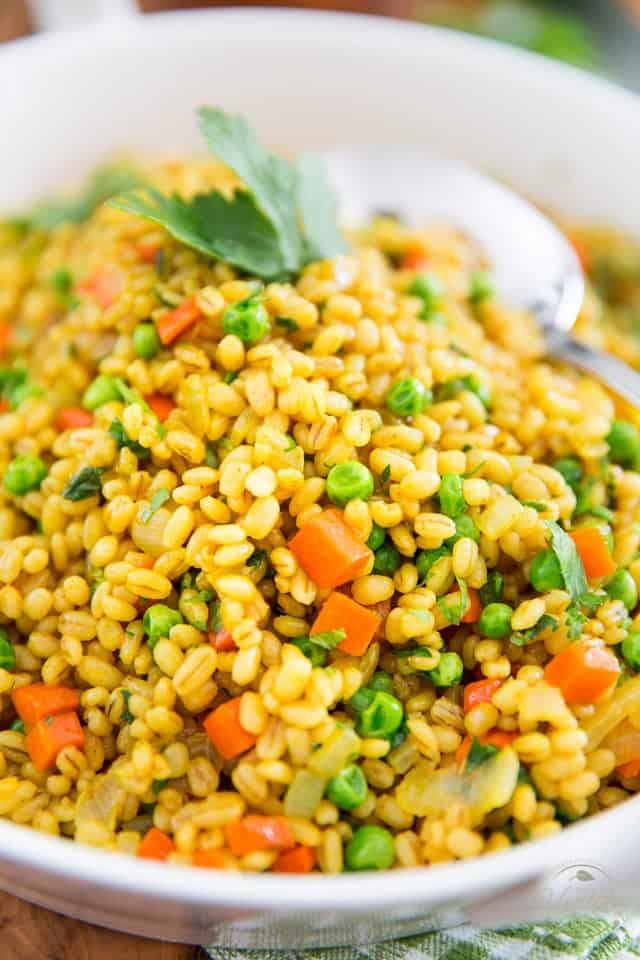

Barley Pilaf

Description
This is my recipe for barley pilaf.
It's easy and very adaptable depending on what you have on hand.
Ingredients
- 1 cup barley
- 3 cups water or stock, plus a splash extra at the end
- 1-2 carrots
- 1-2 stalks celery
- 1/2-1 onion
- other vegetables as desired (frozen peas or sauteed mushrooms are good)
- olive oil
- 2 tbs butter, softened on the counter
- salt and pepper
- garlic powder
- onion powder
- paprika
- turmeric powder
- fresh parsley
Steps
Cook the barley
- Heat barley, water/stock, and a pinch of salt in a pot to a full boil
- Cover, reduce to a simmer, and cook until barley is tender, 30-60 minutes
note on barley:
I find barley cooking time varies a lot, so taste and don't be afraid to add another 1/2 cup of liquid if it's getting dry but the barley's not done yet.
I like to start it fairly early to make sure it has time to get done. It can just sit in the pot until you're ready for it.
Make the pilaf
- Finely chop carrot, celery and onion
- Heat oil on medium heat in a large pan
- Add vegetables with a generous pinch of salt
- Cook, stirring occasionally, until soft but not mushy
- Reduce heat to low, add cooked barley and other vegetables if using, stir along with the extra stock to incorporate
- Season as desired, being sure to taste (turmeric adds beautiful golden color)
- Stir in butter
- Transfer to a serving bowl, garnish with fresh parsley